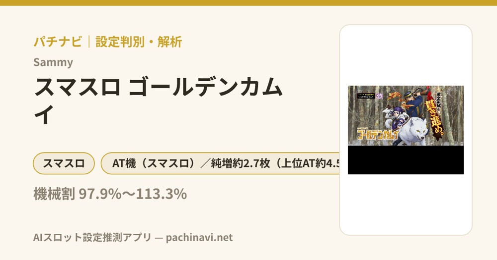

スマスロ ゴールデンカムイ
ピュウ☆と仲間参戦から2種類のBONUSへ。100Gの黄金神威で上乗せ・覚醒・GOLDEN BONUSを重ね、真・黄金神威を目指す。
- 導入
- 2024年4月
- メーカー
- サミー
- 分類
- パチスロ
主要スペック
規定ピュウ☆、狩猟チャレンジ、温泉チャンス、KAMUY BONUS／決戦BONUS、100G＋αの黄金神威、仲間参戦、覚醒、GOLDEN BONUS、2000枚到達後のGOLDEN ROADと真・黄金神威までを専用画面で体験できます。
- 初当り合算は設定1で約1/308.1
- 黄金神威は初期100G・純増約2.7枚/G
- GOLDEN BONUSは30G＋最終+10G
- 2000枚獲得後は純増約4.5枚/Gへ
スマスロ ゴールデンカムイの見どころと計算条件
規定ピュウ☆、狩猟チャレンジ、温泉チャンス、KAMUY BONUS／決戦BONUS、100G＋αの黄金神威、仲間参戦、覚醒、GOLDEN BONUS、2000枚到達後のGOLDEN ROADと真・黄金神威までを専用画面で体験できます。
ゴールデンカムイを数字で早分かり
2種類の初当りBONUS、決戦CHANCE、100G AT、ゲーム数上乗せ、GOLDEN BONUS、覚醒、GOLDEN ROAD、真・黄金神威を機種専用で記録します。
30秒で分かるゴールデンカムイ
2種類のBONUSから100G＋αの上乗せATへ進み、仲間参戦・覚醒・BONUSを重ねて2000枚到達後の上位を狙うゲーム数管理型です。
こんな遊び方に向いている
- BONUS後の決戦CHANCEをPUSHで体験したい
- 残りゲーム数と上乗せを見ながらATを進めたい
- 覚醒とGOLDEN ROADの上位ルートを狙いたい
遊ぶ前に確認したいこと
- 初当り・AT初当り、主要ゲーム数、純増は公開値
- 上乗せゲーム数と獲得枚数を分けて表示
- 未公表の細かな振り分けは体験用代表値
ピュウ☆と仲間参戦
通常時は毎ゲーム貯まるピュウ☆の規定数到達、絆役、レア役からBONUSを目指します。狩猟チャレンジは5G＋αのピュウ☆獲得特化ゾーン、温泉チャンスは20G＋α・期待度約60%のBONUS高確率ゾーンです。
杉元・アシㇼパ・白石の参戦は15G＋α継続し、対応役の性能を強化。複数参戦中の絆役はBONUS直撃の期待が高まります。通常時の内部ピュウ☆量や参戦抽選は初当り確率へまとめています。
2種類の初当りBONUS
通常時のBONUSは11GのKAMUY BONUSと30Gの決戦BONUS。どちらも純増約4.5枚/Gで、フリーズ発生ならAT濃厚です。
決戦BONUS後は20G＋αの決戦CHANCEへ。杉元参戦状態で期待度を上げ、最終PUSHでAT『黄金神威』の当落を開きます。シミュレーターではAT初当りの公開値に合うよう、BONUS経由の突破結果を固定抽選します。
黄金神威と上乗せ
黄金神威は初期100G・純増約2.7枚/Gのゲーム数上乗せ型AT。レア役でゲーム数上乗せ、仲間参戦、覚醒、GOLDEN BONUS、特化ゾーンを抽選します。
専用画面では残りゲーム数を減らし、区間の最後にPUSHを表示。直乗せ、GOLDEN BONUS、覚醒のいずれかを開いて残りゲーム数と累計枚数へ反映します。
GOLDEN BONUSと覚醒
AT中のGOLDEN BONUSは30G・純増約2.7枚/Gで、最終ゲームに+10G上乗せ。BONUS中は参戦を抽選し、参戦後は覚醒を目指します。
覚醒／極・覚醒は10G＋αの上乗せ特化ゾーン。リプレイ・レア役で上乗せに期待でき、3人集結なら極・覚醒となります。専用PUSHで上乗せゲーム数を開き、枚数とは分けて表示します。
GOLDEN ROADと真・黄金神威
AT中の獲得枚数が2000枚を超えると純増が約4.5枚/Gへ上昇。終了後は50GのGOLDEN ROADを経て、上位AT『真・黄金神威』へ進みます。
真・黄金神威中に再び2000枚を獲得すると上位ループの権利を狙えます。シミュレーターでは2000枚到達を条件に上位へ進め、未公表の継続抽選は体験用代表値として扱います。
固定条件と簡略化する範囲
- 約36.9G/50枚・1,000円46枚貸し・5.2枚交換で固定
- 設定1〜6の初当り・AT初当り・出玉率は公開設定別値を使用
- 2種類BONUS、決戦CHANCE、100G AT、上乗せ、覚醒、GOLDEN BONUS、上位ATを専用進行
- BONUS振り分け、AT中の各契機選択率、上乗せ振り分けなど未公表部分は体験用代表値
- 19,000枚到達時はコンプリート表示
平均Gと投資目安の計算
掲載する黄金神威初当り約1/818.4は設定1基準です。当サイトでは50枚あたり36.9G、1,000円46枚貸しの固定条件から、設定1基準の平均投資目安を約24,100円と計算します。
シミュレーターでは設定1〜6を均等抽選します。設定1〜6で公開されている初当り値を個別に使います。公開されていない特化ゾーン・上位到達率の設定差は加えません。 換金は5.2枚交換で固定し、結果とランキングに設定を表示します。
シミュレーション結果の見方
当るまで初当りBONUS・黄金神威までのゲーム数
設定設定1・2・3・4・5・6から抽選された今回の設定
上位到達GOLDEN ROADと真・黄金神威への到達
最終収支差枚と5.2枚交換の収支目安
結果は自動で「マイ記録」に保存され、同じ機種を何回試したか、最高収支、勝率をあとから確認できます。
簡易シミュレーターについて
初当りBONUS・黄金神威・真・黄金神威の流れを固定条件で体験できます。JavaScriptを有効にすると、この位置にシミュレーター、演出、マイ記録、機種別ランキングが表示されます。
結果は娯楽・確率理解のための参考表示です。金銭的価値や交換価値はなく、実際の勝敗や収支を保証しません。18歳未満の方の利用はお控えください。
ゴールデンカムイのよくある質問
ゴールデンカムイはどんな台？
規定ピュウ☆、狩猟チャレンジ、温泉チャンス、KAMUY BONUS／決戦BONUS、100G＋αの黄金神威、仲間参戦、覚醒、GOLDEN BONUS、2000枚到達後のGOLDEN ROADと真・黄金神威までを専用画面で体験できます。 初当り合算は設定1で約1/308.1が主な確認ポイントです。
ゴールデンカムイの平均投資目安は？
設定1基準の黄金神威初当り約1/818.4と、50枚あたり36.9G・46枚貸しの固定条件から、平均24,100円を目安として表示します。実際の設定や遊技状況で結果は変わります。
設定とゲームの流れはどう抽選する？
開始時に設定1・2・3・4・5・6から1つを均等抽選し、初当りBONUS、黄金神威、GOLDEN ROAD、真・黄金神威の順で到達を判定します。設定は最終結果とランキングに表示します。
収支はどう計算する？
1,000円46枚貸し・5.2枚交換の固定条件で投資、換金、収支目安を計算します。実店舗の再プレイ、持ちメダル、端数処理は含みません。